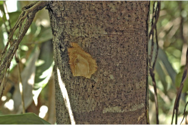
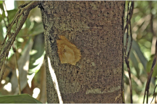
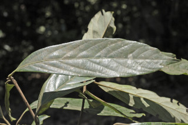
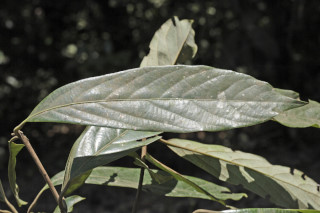

Trees up to 12 m tall
12 ಮೀ.ವರೆವಿಗೆ ಬೆಳೆಯುವ ಮರಗಳು.
12 മീറ്റര് വരെ ഉയരമുളള മരങ്ങള്.
மரங்கள் 12 மீ. உயரம் வரை வளரக்கூடியது.
Bark brown, lenticellate; blaze light orange.
ತೊಗಟೆ ಕಂದು ಬಣ್ಣದಲ್ಲಿರುತ್ತದೆ ಮತ್ತು ವಾಯು ವಿನಿಮಯ ಬೆಂಡು ರಂಧ್ರ ಸಮೇತವಿರುತ್ತದೆ; ಕಚ್ಚು ಮಾಡಿದ ಜಾಗ ತೆಳು ಕಿತ್ತಳೆ ಬಣ್ಣದಲ್ಲಿರುತ್ತದೆ.
ശ്വസനരന്ധ്രങ്ങളുളള, തവിട്ട് നിറത്തിലുളള പുറംതൊലി; വെട്ട്പാടിന് ഇളം ഓറഞ്ച് നിറം.
மரத்தின் பட்டை ப்ரவுன் நிறமானது, லெண்டிசெல் (பட்டைத்துளைகள்) உடையது; உள்பட்டை வெளிறிய ஆரஞ்சு நிறமானது.
Young branchlets terete, rusty tomentose.
ಎಳೆಯ ಕಿರುಕೊಂಬೆಗಳು ದುಂಡಾಗಿರುತ್ತವೆ ಮತ್ತು ತುಕ್ಕು ಬಣ್ಣದ ದಟ್ಟವಾದ ಮೃದುತುಪ್ಪಳದಿಂದ ಕೂಡಿರುತ್ತವೆ.
തുരുമ്പന് രോമിലമായ, ഉരുണ്ട ഇളം ഉപശാഖകള്.
சிறிய நுனிக்கிளைகள் தடித்தவை, குறுக்குவெட்டுத் தோற்றத்தில் வளையமானது, துரு போன்ற உரோமங்களுடையது.
Leaves simple, subverticilate; petiole to 2.5 cm long, planoconvex in cross section, pubescent; lamina 8.5-21 x 2.5-6 cm, narrow elliptic, apex sharply acute-acuminate, base acute-cuneate, margin entire, subcoriaceous, shining above, glaucous, rusty tomentose beneath, glabrous above; midrib slightly raised above; secondary_nerves 8-12 pairs; tertiary_nerves close, percurrent but not prominent, nearly horizontal.
ಎಲೆಗಳು ಸರಳವಾಗಿದ್ದು, ಉಪತರಂಗಿತ ವ್ಯವಸ್ಥೆಯಲ್ಲಿರುತ್ತವೆ; ತೊಟ್ಟುಗಳು 2.5 ಸೆಂ.ಮೀ. ವರೆಗಿನ ಉದ್ದ ಹೊಂದಿದ್ದು ಅಡ್ಡ ಸೀಳಿದಾಗ ಸಪಾಟ ಪೀನ ಮಧ್ಯದ ಆಕಾರದಲ್ಲಿದ್ದು ಮೃದುತುಪ್ಪಳದಿಂದ ಕೂಡಿರುತ್ತವೆ; ಪತ್ರಗಳು 8.5-21 x 2.5-6 ಸೆಂ.ಮೀ. ಗಾತ್ರ ಹೊಂದಿದ್ದು ಸಂಕುಚಿತ ಅಂಡವೃತ್ತದ ಆಕಾರದಲ್ಲಿರುತ್ತವೆ. ಪತ್ರದ ತುದಿ ತೀಕ್ಷ್ಣವಾಗಿ ಚೂಪು - ಕ್ರಮೇಣ ಚೂಪಾಗುವ ಮಾದರಿಯಲ್ಲಿದ್ದು, ಬುಡ ಚೂಪು - -ಬೆಣೆಯಾಕಾರದಲ್ಲಿರುತ್ತದೆ;ಅಂಚು ನಯವಾಗಿರುತ್ತದೆ;ಪತ್ರಗಳ ಮೇಲ್ಮೈ ಉಪ-ತೊಗಲಿನ ಮಾದರಿಯಲ್ಲಿದ್ದು ಮೇಲ್ಭಾಗ ಹೊಳಪಿನ ಸಮೇತವಿದ್ದು ತಳಭಾಗ ಮಾಸಲು ಬೂದು ಬಣ್ಣ ಹೊಂದಿರುತ್ತದೆ; ಪತ್ರಗಳ ತಳಭಾಗ ತುಕ್ಕು ವರ್ಣದ ದಟ್ಟ ಮೃದು ತುಪ್ಪಳದಿಂದ ಕೂಡಿರುತ್ತದೆ ಮತ್ತು ಪತ್ರದ ಮೇಲ್ಭಾಗ ರೋಮರಹಿತವಾಗಿರುತ್ತದೆ; ಮಧ್ಯನಾಳ ಪತ್ರದ ಮೇಲ್ಭಾಗದಲ್ಲಿ ತುಸು ಮೇಲೆದ್ದಿರುತ್ತದೆ; ಎರಡನೇ ದರ್ಜೆಯ ನಾಳಗಳು 8-12 ಜೋಡಿಗಳಿರುತ್ತವೆ;ಮೂರನೇ ದರ್ಜೆಯ ನಾಳಗಳು ಸನಿಹವಾಗಿರುತ್ತವೆ ಎಲೆದಿಂಡಿಗೆ ಅಡ್ಡವಾಗಿ ಕೂಡುವ ರೀತಿಯವು ಆದರೆ ಪ್ರಮುಖವಾಗಿರುವುದಿಲ್ಲ ಮತ್ತು ಹೆಚ್ಚೂ ಕಡಿಮೆ ಲಂಬ ರೇಖೆಗೆ ಸಮಕೋನದಲ್ಲಿರುತ್ತವೆ.
ഇലകള് ലഘുവാണ്, ഉപതരംഗിതവും, ഛേദത്തില് ഒരുഭാഗം പരന്നും മറുഭാഗം ഉരുണ്ടിരിക്കുന്നുതുമായ ഘടനയുളള, നനുത്ത രോമിലമായ ഇലഞെട്ടിന് 2.5 സെ.മീ വരെ നീളം; പത്രഫലകത്തിന് 8.5 സെ.മീ മുതല് 21 സെ.മീ വരെ നീളവും 2.5 സെ.മീ മുതല് 6 സെ.മീ വരെ വീതിയും, വീതികുറഞ്ഞ ദീര്ഘവൃത്താകൃതിയുമാണ്; കൂര്ത്ത നിശിതമായ-ദീര്ഘാഗ്രമാണ്, പത്രാധാരം നിശിതാകാര-ആപ്പാകാരമാണ്, അവിഭജിതമായ അരികുകള്, ഉപചര്മ്മില പ്രകൃതം, തിളങ്ങുന്ന മുകള്ഭാഗം, കീഴെ തുരുമ്പന് രോമിലവും നീലരാശി കലര്ന്നതുമാണ്, മുകളില് അരോമിലമാണ്; മുഖ്യസിര മുകളില് ഒരല്പ്പം ഉയര്ന്നതാണ്; 8 മുതല് 12 വരെ ജോഡി ദ്വിതീയ ഞരമ്പുകള് ഏറെ പ്രമുഖമല്ലാത്ത, അടുത്ത, ഏതാണ്ട് തിരശ്ചീന പെര്കറന്റ് വിധത്തിലുളള ത്രിതീയ ഞരമ്പുകള്.
இலைகள் தனித்தவை, சப்வர்டிசில்லேட்; இலைக்காம்பு 2.5 செ.மீ., நீளமானது, குறுக்குவெட்டுத் தோற்றத்தில் பிளேனோகான்வக்ஸ், உரோமங்களுடையது; இலை அலகு 8.5-21 X 2.5-6 செ.மீ., குறுகிய நீள்வட்ட வடிவானது, அலகின் நுனி கூரியது-அதிக்கூரியது, அலகின் தளம் கூரியது-ஆப்பு வடிவானது, அலகின் விளிம்பு முழுமையானது, சப்கோரியேசியஸ், அலகின் மேற்பரப்பு பளபளப்பானது, அலகின் கீழ்பரப்பு மெழுகு பூசியது போன்றது அல்லது சாம்பல் கலந்த நீல நிறமானது (க்களாக்கஸ்); இரண்டாம் நிலை நரம்புகள் 8-12 ஜோடிகள்; மூன்றாம் நிலை நரம்புகள் நெருக்கமானது, பெர்க்கரண்ட், ஆனால் மெல்லியது, கிட்டதட்ட கிடைமட்டமானது.
Flowers unisexual, dioecious, in fascicled on short peduncle.
ಹೂಗಳು ಏಕಲಿಂಗಿಗಳಾದ್ದು, ಪ್ರತ್ಯೇಕ ಸಸ್ಯಗಳಲ್ಲಿರುತ್ತವೆ ಮತ್ತು ಕಿರು ವೃಂತದ ಮೇಲಿನ ಗುಚ್ಛಗಳಲ್ಲಿರುತ್ತವೆ.
കുറിയ തണ്ടുളള കൂട്ടങ്ങളിലുണ്ടാകുന്ന ഏകലിംഗികളായ പൂക്കള്, ഡയീഷ്യസുമാണ്.
மலர்கள் ஒர்பாலானவை, ஈரகம் கொண்டவை, கூட்டமாகமைந்தது, மிகச்சிறிய மஞ்சரி காம்புடையது.
Berry, globose, seated on fruiting_perianth cup, black when ripe; seed 1.
ಬೆರ್ರಿಗಳು ಗೋಳಾಕಾರದಲ್ಲಿದ್ದು ಬಟ್ಟಲು ಆಕಾರದ ಪುಷ್ಪಾವರಣದ ಮೇಲೆ ಆಸೀನ -ವಾಗಿರುತ್ತವೆ ಮತ್ತು ಮಾಗಿದಾಗ ಕಪ್ಪು ಬಣ್ಣ ಹೊಂದಿರುತ್ತವೆ ಹಾಗೂ 1 ಬೀಜವನ್ನು ಒಳಗೊಂಡಿರುತ್ತವೆ.
ഒറ്റവിത്തുളള കായ, പരിദളക്കകപ്പിനകത്തിരിക്കുന്ന, മൂക്കുമ്പോള് കറുപ്പാകുന്ന ഗോളാകാര ബെറിയാണ്.
முழுச்சதைகனி (பெர்ரி), கோளவடிவானது, கோப்பை போன்ற நிரந்தரமான ப்பீரியான்ந்த் மேல் கனி அமைந்தது, கனியும் போது கருப்பு நிறமடைகிறது; விதை ஒன்றுடையது.
 


 
